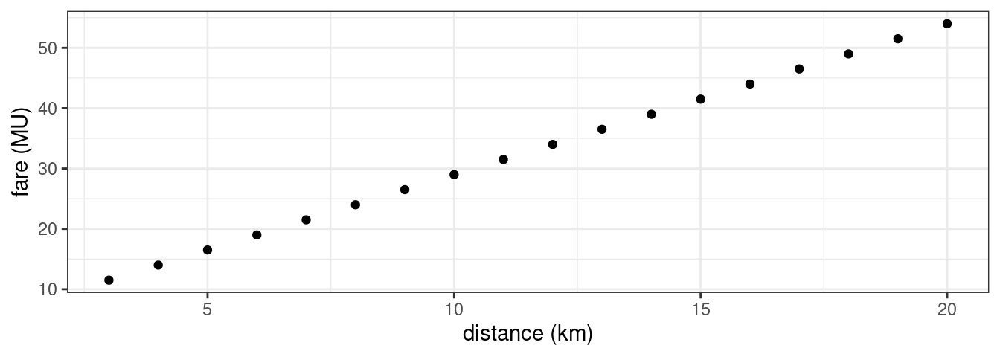
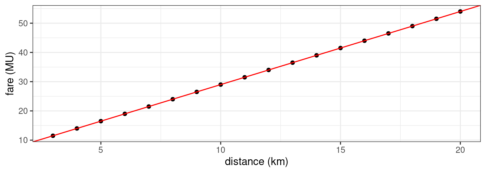
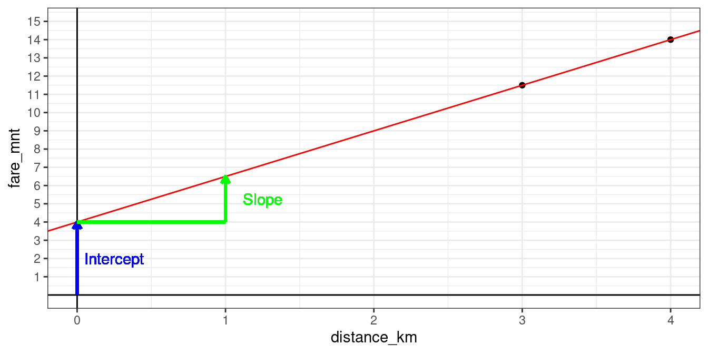
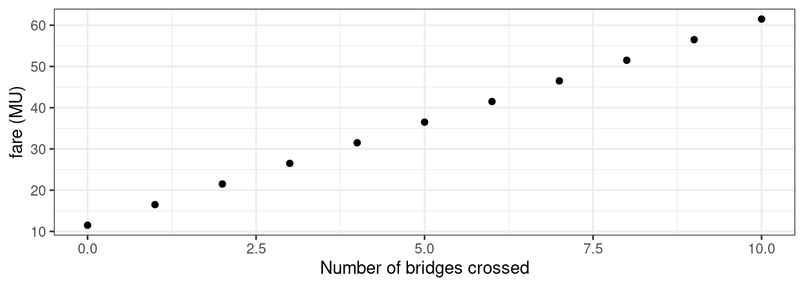

Chapter 4 Error-less Linear Models
What I am going to call ‘error-less linear models’ are actually systems of linear equations like those you might recall from school (of the ‘2=a+3x; 1=a+x; solve for a and x’-variety). I’ll call them error-less linear models, because in many important ways they resemble the class of statistical models we will use in this course: (Generalized) Linear Models.
In this section we are going to explore error-less linear models, i.e. linear models that work on idealized data, when there is no measurement error, and when the ‘correct’ model describing the data is known.
The basic form of a linear regression model, in a form that works for idealized data (i.e., data perfectly follow some hypothesized function):
\[ \underbrace{Y}_{\text{dependent variable}} = \overbrace{\underbrace{a}_{\text{intercept}}}^{\text{additive term}} + \overbrace{\underbrace{b_1}_{\text{slope}} * \underbrace{X_{1}}_{\text{predictor}}}^{\text{additive term}} + \overbrace{\underbrace{b_2}_{\text{slope}} * \underbrace{X_{2} }_{\text{predictor}}}^{\text{additive term}} + \ldots\]
- The typical dataset we will be working with has a structure similar to the one below:
| dependent variable (\(Y\)) |
predictor 1 (\(X_1\)) |
predictor 2 (\(X_2\)) |
(further predictors) |
|---|---|---|---|
| 2.95 | 1.1 | 2.2 | (…) |
| 9.1 | 2.9 | -4.0 | (…) |
| 5 | 3.1 | -1.4 | (…) |
| … | … | … | (…) |
- What the variables represent will depend on the problem you’re studying and the question you’re asking
- dependent variable (e.g., hours of sleep/day)
- predictor 1 (e.g., daily food intake in kg)
- predictor 2 (e.g., deviation from average weight)
- The dependent variable \(y\) is assumed to depend on the predictors \(x_1, x_2, \ldots\).
- The predictors \(x_1, x_2, \ldots\) can be independent variables (i.e., under experimental control), or other types of covariates (i.e., simply observed).
The model is called linear because \(y\) is assumed to be a linear function of the \(x_1, x_2, \ldots\). That \(y\) increases by some fixed amount \(\Delta y\) for every increase of \(\Delta x_i\) in \(x_i\).
Two types are usually distinguished: single-variable, and multi-variable (also: simple linear regression, multiple linear regression).
The above equation is about vectors of observations. Let’s see how it translates to statements about specific observations. Please note that \(Y\), \(X_1\), \(X_2\) in the equation above are all vectors, while \(y_i\), \(x_{1,i}\), \(x_{2,i}\) are all specific numbers (from the \(i\)-th row).
\[ \underbrace{y_i}_{\text{dependent variable}} = \overbrace{\underbrace{a}_{\text{intercept}}}^{\text{additive term}} + \overbrace{\underbrace{b_1}_{\text{slope}} * \underbrace{x_{1,i}}_{\text{predictor}}}^{\text{additive term}} + \overbrace{\underbrace{b_2}_{\text{slope}} * \underbrace{x_{2,i} }_{\text{predictor}}}^{\text{additive term}} + \ldots\]
For two predictors \(X_1\) and \(X_2\), and three observerations like in the table above, this equation translates to the following equation system \[ y_1 = a + b_1\cdot x_{1,1} + b_2\cdot x_{2,1} \\ y_2 = a + b_1\cdot x_{1,2} + b_2\cdot x_{2,3} \\ y_3 = a + b_1\cdot x_{1,3} + b_2\cdot x_{2,3}\]
That is, \[ 2.95 = a + b_1\cdot 1.1 + b_2\cdot 2.2 \\ 9.1 = a + b_1\cdot 2.9 + b_2\cdot (-4) \\ 5 = a + b_1\cdot 3.1 + b_2\cdot (-1.4)\]
In this case, there is a perfect solution: \(a \approx 7.90\), \(b_1 \approx -1.60\), \(b_2 \approx -1.45\) (rounded to two decimal places). \[ \underbrace{y}_{\text{dependent variable}} = \overbrace{\underbrace{7.9}_{\text{intercept}}}^{\text{additive term}} + \overbrace{\underbrace{(-1.60)}_{\text{slope}} * \underbrace{x_1}_{\text{predictor}}}^{\text{additive term}} + \overbrace{\underbrace{(-1.45)}_{\text{slope}} * \underbrace{x_2}_{\text{predictor}}}^{\text{additive term}} + \ldots\]
| model prediction | dependent variable | predictor 1 | predictor 2 | (further predictors) |
|---|---|---|---|---|
| \(7.9-1.6\cdot 1.1-1.45\cdot 2.2\) | 2.95 | 1.1 | 2.2 | (…) |
| \(7.9-1.6\cdot 2.9-1.45\cdot (-4)\) | 9.1 | 2.9 | -4.0 | (…) |
| \(7.9-1.6\cdot 3.1-1.45\cdot (-1.4)\) | 5 | 3.1 | -1.4 | (…) |
| … | … | … | (…) |
- Throughout this course, we will make use of the (Generalized) Linear Model as the main statistical model because it is:
- fairly easy to use (implemented in most programming languages)
- sufficiently versatile for most practical purposes (can handle most problems you would want to solve at this point)
- well-studied (all mistakes you will make have already been made, and written about)
4.1 Single-variable models
- Let’s take a look at a dataset of taxi rides in a country far far away. Imagine that I don’t speak the local language, but I need to go places, and in the process, I would like to understand how the cab fare system works.
- I have taken 18 taxi rides, and recorded the travel distance, as well as the taxi fare for reach ride.
- The following plot shows each of these measurements as a point with the distances (in km) on the x-axis, and the fare (money units, MU) on the y-axis.
- This dataset is interesting, because you probably understand the typical relationships between ride distance and fare fairly well – it is linear. So it is an ideal example for illustrating linear models.

- Unsurprisingly, we can see clearly that the fare increases with distance. In other words, distance and fare have a positive relationship (if one increases, so does the other).
The relationship between the two variables is so strong that if we know the value of one of the two variables for a particular data point, we can predict the value of the other with a high degree of confidence. (You might want to say that I can predict if with absolute certainty, but that presupposes precise knowledge of the cab fare system in that city, and an extreme degree of trust towards the local taxi drivers. Let’s assume that we don’t have either.)
We can make that prediction with such a high degree of certainty because all the points seem to lie on a line. If we learned the function that describes this line, we could learn much more from this dataset than the simple fact that the two variables a positive related.
That is unsurprising to begin with, but we may want to know how exactly they are related. A simple way to capture this relationship is to try and describe it with this function:
\[ \text{fare} = a + b \cdot \text{distance} \]
- What this equation says is that if we take a value for distance, multiply it by some number called \(b\), and then add another number called \(a\), we will know the fare that corresponds to this distance. (In other words, this equation posits that the relationship between distance and fare is linear.4)
- In this particular case the relationship is \(\text{fare} = 4 + 2.5 \cdot \text{distance}\), which means that \(a=4\), and \(b=2.5\). We can verify that this equation is indeed the correct generalization by visualizing this function as a line in the plot below: As you can see, it accurately describes all the points in the graph.

- Importantly, if we conceptualize \(a\) and \(b\) as just some numbers that we need to add and multiply by, we will miss an important insight: Both numbers have useful interpretations. In this case, \(a\) and \(b\) can be interpreted as follows:
- \(a\) is called the intercept: It can be interpreted as the value of fare when distance is 0. In this case, the intercept is \(4~MU\), which is the amount you have to pay if you get in and change your mind after the taxometer has been switched on (if the taxi driver is a real stickler for rules).
- \(b\) is called the slope for distance: It can be interpreted as the additional amount of money you have to pay for every additional kilometer traveled. A slope of \(2.5\) means that a distance increase of \(1~km\) increases the fare by \(2.5~MU\).
- The plot below illustrates these interpretations:

4.2 Multi-variable models
Let’s imagine that this imaginary city also has many bridges. Since I wasn’t sure whether bridge tolls apply, I also recorded the number of bridges crossed on each trip. In the previous section, we’ve looked at the subset of data where no bridges were crossed. Let’s see how the fare depends not only on distance travelled, but also on the number of bridges crossed.
Now, we are looking at the relationship between three variables, and the data frame looks as follows:
- Let’s see if there even is a relationship. Let’s look at the effect of bridges at distance=\(3\,km\).

Yup, it looks like there is a positive effect. Let’s model it in additive fashion:
- We will again assume that the relationships between fare and distance, as well as between fare and number of bridges crossed is linear, and that they contribute to the fare independently. We can now describe the relationship with the following equation: \[ fare = a + b_1 \cdot distance + b_2 \cdot N_{bridges} \]
The correct parameter values for this equation are \(a=4\), \(b_1 = 2.5\) (as previously), and \(b_2=5\). The interpretation of the coefficients is similar to the previous section:
\(a\) (the intercept) is the fare when no bridges have been crossed, and the travel distance is zero.5
\(b_1\) (the slope for distance) is the additional fare for every additional kilometer.
\(b_2\) (the slope for \(N_{bridges}\)) is the additional fare for every additional bridge.
The following plot shows the data vis-à-vis the linear model fits. Because we are dealing with a relationship between three variables, every datapoint is a point in three-dimensional space (x-axis: distance, y-axis: number of bridges, z-axis: fare). The multi-variable model fit is illustrated by the black plane which rises with increasing distance and/or number of bridges crossed.
If you enable the display of the single-variable model from the last section, you’ll see that it also describes a plane: However, the plane corresponding to the single-variable model does not rise with the number of bridges crossed. This is because it is not used as a predictor in that model.
You will also notice that the red plane and the black plane intersect in a line at \(N_{bridges} = 0\). This is because the two model equations \(a + b_1 * distance\) and \(a + b_1 * distance + b_2 * N_{bridges}\) are equivalent for \(N_{bridges} = 0\).
Please note that we don’t neeed to assume that the ‘true relationship’ between the two variables is actually linear. Most interesting relationships are not linear. However, we can still learn a lot about them from a linear model as you will see in the following, especially if we are willing to assume that they are approximately linear. ↩
While the number of bridges depends on distance, it is in principle possible to cross a bridge while keeping the travel distance below a kilometer, in which case it would count as zero.↩